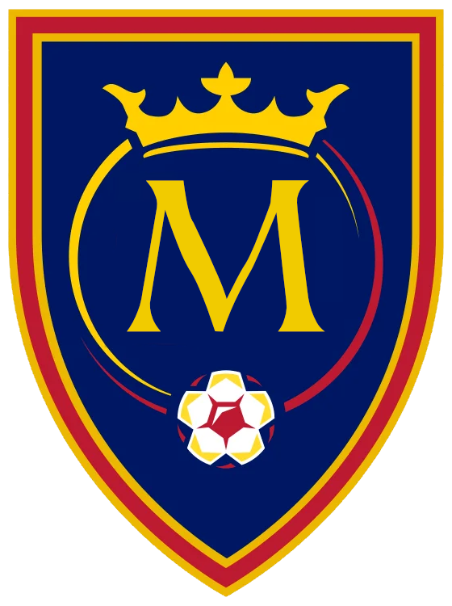
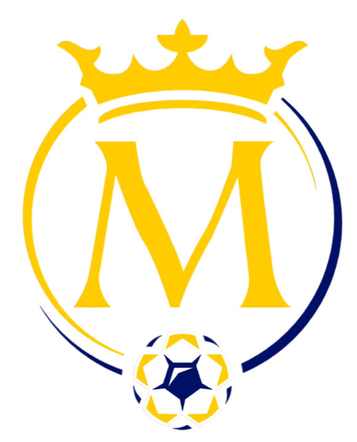
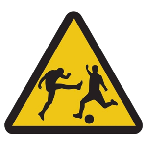

Meldina Futebol Clube
O Clube
Uma coroa, três cores e uma torcida que não para de crescer. Conheça a identidade e a história do Meldina FC.
Nossa história
O Meldina nasceu de um grupo de amigos com uma ideia simples: jogar futebol como se cada partida valesse uma coroa.
O que começou em peladas de fim de semana ganhou nome, escudo, cores e — principalmente — uma torcida. Em pouco tempo, o Meldina Futebol Clube se organizou dentro e fora de campo, com comissão técnica, uniformes oficiais e presença nas competições da região.
Fundado em 2017, no FIFA 18, o Meldina é dez vezes campeão da primeira divisão e campeão da Copa EA. Depois da reconstrução de 2024 e do título da Segunda Divisão em 2025, o clube volta à elite do Pro Clubs em 2026, mantém a Meldina TV como canal oficial de conteúdo e conta com mais de mil sócios. Em setembro de 2026, o clube adotou seu lema oficial, que resume tudo o que o Meldina representa: Muito além do jogo. As amizades, a união do elenco, a torcida e os valores que levamos dentro e fora de campo. Vamo Meldina — pra sempre.


Identidade
O escudo
Cada elemento do escudo do Meldina carrega um significado. Juntos, contam quem somos: nobres na postura, humildes no trabalho, apaixonados pela bola.
A COROA
Símbolo da realeza e da ambição. O Meldina entra em campo para reinar.
O MONOGRAMA
O “M” clássico, com serifas, representa a tradição que o clube quer construir.
O ANEL
O círculo em ouro e grená envolve o monograma — a união de todos os que vestem a camisa.
A BOLA
Na base, a bola com a estrela grená: o futebol como centro de tudo.
Paleta oficial
As cores
#8F0010 — a paixão, a raça e a cor principal da camisa titular.#EFAA19 — a coroa, as conquistas e a nobreza do clube.#001065 — a firmeza, a tradição e o campo do escudo.Temporada 2026 · Lider
Uniformes


Glórias
Sala de troféus
Rivalidades
O clássico
Nenhum jogo mexe tanto com a torcida quanto Meldina x De Sola FC. O duelo virou clássico dentro do Pro Clubs: casa cheia, provocações a semana inteira e a certeza de que, nesse jogo, ninguém entra em campo para empatar.
Calendário de jogos
Linha do tempo